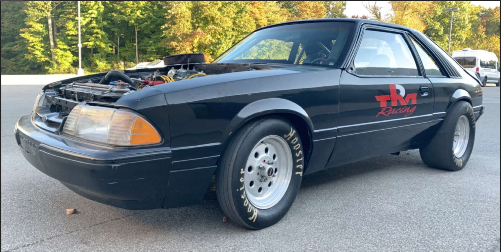
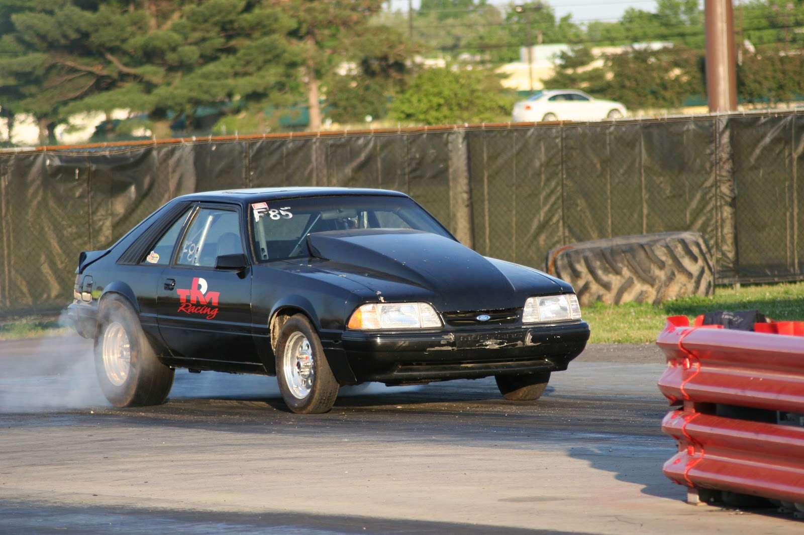
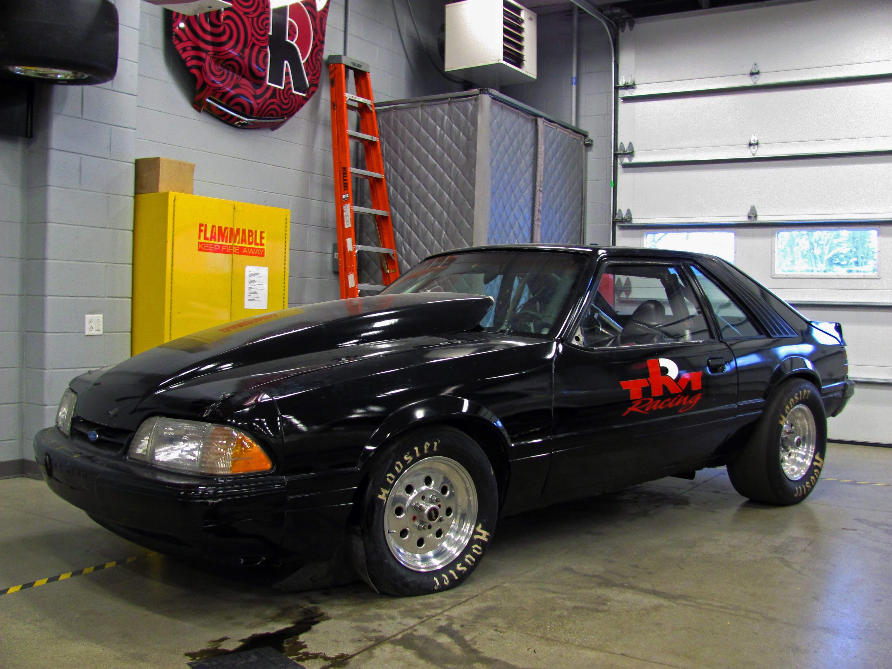

Facts and Info
The Old Mustang is our 1984 Fox Body Mustang powered by a Ford 351 Cleveland. We've built it with a focus on drag racing. While the Old Mustang has been a part of TRM for a very long time, the Cleveland is a realtively new addition and we are excited to see what it can do on a track!